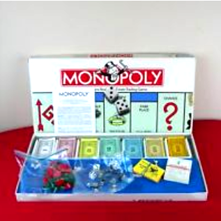
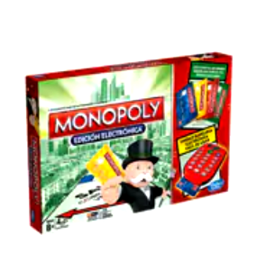

| El juego de mesa más vendido de la historia. | Antes Un juego creado con la función de servir como herramienta para enseñar las teoriás de la justicia social y económica extraídas del estudio títulado Progreso y Miseria de Henry George.  |
Monopoly Comercializado por vez primera en el año de 1936. A lo largo de 80 años, el juego ha sufrido una notable evolución. Sus múltiples ediciones y sus tantas versiones han dado pie a que se cambiara desde la caja que lo contiene hasta los elementos que lo componen. Logrando así, mantenerse como el favorito a través de las décadas. |
Ahora Con los años la finalidad del juego cambió para solo disfrutar un buen rato, negociando propiedades y hasta haciendo uso de medios electrónicos para todas las trnasacciones que requiere el juego.  |
||
|---|---|---|---|---|---|
| Con información de Gráffica.info, información visual. |